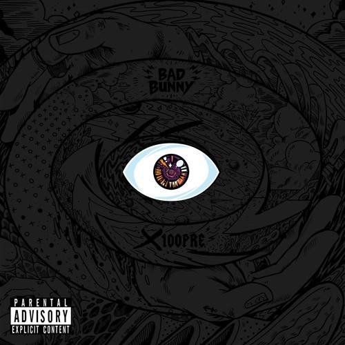
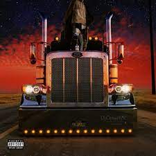
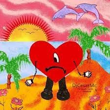
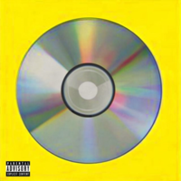

Un paso por su música
X 100pre
Lanzado el 24 de diciembre de 2018 a través de Rimas Entertainment. El álbum cuenta con 18 canciones en las cuales encontramos colaboraciones de Diplo, El Alfa y Drake. La revista Rolling Stone lo colocó en el puesto 41 como uno de los 100 mejores álbumes debut de todos los tiempos y en el puesto 447 de la lista de los 500 mejores álbumes de todos los tiempos.
Y H L Q M D L G
Se lanzó el 29 de febrero de 2020 por Rimas Entertainment. Presenta apariciones especiales de Daddy Yankee, Arcángel, Myke Towers, Sech, Anuel AA, Yaviah, Kendo Kaponi, Jowell & Randy, Ñengo Flow, entre otras. El álbum fue lanzado solo dos días después de su anuncio. Alcanzó el número dos en el Billboard 200 de Estados Unidos.
El último tour del mundo
Se lanzó el 27 de noviembre de 2020 por Rimas Entertainment, solo nueve meses después de su trabajo discográfico anterior, YHLQMDLG. Está compuesto por dieciséis temas y cuenta con apariciones especiales de Jhay Cortez, Rosalía y Abra.4 Según la canción de Bad Bunny, este sería el último álbum del cantante antes de retirarse de la música por un período de tiempo indefinido. Se convirtió en el primer álbum en español en alcanzar el número uno en el Billboard 200 de Estados Unidos.
Un verano sin ti
Es el quinto álbum de estudio en solitario y sexto en general del rapero y cantante puertorriqueño Bad Bunny. Fue lanzado el 6 de mayo de 2022 por Rimas Entertainment, luego del lanzamiento de su disco anterior El último tour del mundo (2020). El álbum contiene veintitrés pistas. y cuenta con las colaboraciones de Chencho Corleone, Jhay Cortez, Tony Dize, Rauw Alejandro, Bomba Estéreo, The Marías y Buscabulla.5 Un verano sin ti, un éxito comercial y de crítica, debutó en la cima del Billboard 200 de Estados Unidos, marcando el segundo álbum número uno de Bad Bunny y el tercer álbum en español en encabezar la lista.
Oasis
Es un álbum de estudio colaborativo entre el cantante colombiano J. Balvin y Bad Bunny.1 El álbum abarca desde el Reguetón al Latin Trap e incluye leves pinceladas de folclore latino y Jazz, presenta ocho canciones. Asimismo, es el primer álbum colaborativo entre J Balvin y Bad Bunny, siendo que ya antes trabajaron juntos en diversas canciones como: «Si tu novio te deja sola» y «I Like It» junto a Cardi B. Además, todos los videoclips del álbum fueron dirigidos por Colin Tilley. Dentro del álbum, se desprenden algunos sencillos como: «Qué pretendes», «La canción», «Un peso» y «Yo le llego» entre otros. En este álbum, están incluidas las participaciones de Marciano Cantero y Mr. Eazi.
Las que no iban a salir
Las que no iban a salir es un álbum recopilatorio del rapero y cantante puertorriqueño Bad Bunny. Se estrenó el 10 de mayo de 2020 a través de Rimas Entertainment.Presenta apariciones especiales de Zion & Lennox, Yandel, Don Omar, Nicky Jam, Jhay Cortez.
